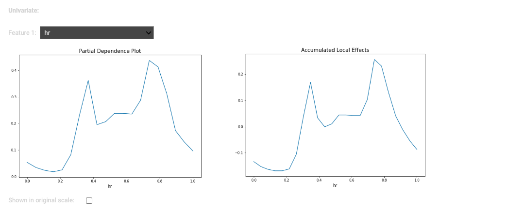
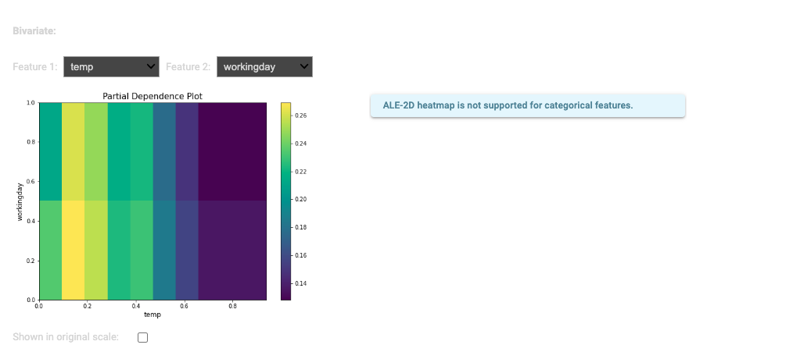

PDP (Partial Dependence Plot)¶
Partial dependence plots(PDP) [H2009] visualize the dependence between the response and a set of target features (usually one or two), marginalizing over the values of all other input features (the ‘complement’ features). It can be interpreted as the expected target response as a function of the input features of interest.
Mathematical Formulation
Let \(x = \{x_{1}, x_{2}....x_{p}\}\) represent the predictors set of a prediction function \(\widehat{f}(x)\). if we partition \(x\) into trow sets , \(z_{s}\) and his complement \(z_{c} = \{x_{i}; x_{i} \notin z_{s}\}\), then the partial dependence of the responses on \(z_{s}\) is defined as follow :
In (1) , \(p_{c}(z_{c})\) is the marginal probability density of \(z_{c}: p_{c}(z_{c})=\int p(x)dz_{s}\). (1) can be estimated from a set of training data points by the followin
Examples:
In this example, we assume the reader has full knowledge of PiMl, starting from data preparation through model training. Therefore, we start the tutorial with model training.
Training model: To train a model , run exp.model_train(). in this case, we select XGB2
and the evaluation loss is the MSE as follows.
exp.model_train()
{kind=link}
{kind=link}
NB: it is also possible to customize your model and the training process. So we strongly recommend you explore the options above.
PDP (Partial Dependence Plot)
 {kind=link}
{kind=link}
References
- H2009
T. Hastie, R. Tibshirani and J. Friedman, The Elements of Statistical Learning, Second Edition, Section 10.13.2, Springer, 2009.